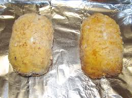

Chicken Cordon Bleu

Barber Foods Chicken Cordon Bleu before by Willis Lam, used under CC BY-SA 2.0
Description
Chicken Cordon Bleu is a classic dish that features breaded chicken breasts stuffed with ham and Swiss cheese, then baked to golden perfection. This recipe is perfect for a special dinner or when you want to impress your guests with a delicious and elegant meal.
Prep Time: 10 minutes | Cook Time: 35 minutes | Total Time: 45 minutes
Source: allrecipes
Ingredients
- nonstick cooking spray
- 4 boneless, skinless chicken breast halves
- 1/4 teaspoon salt
- 1/8 teaspoon ground black pepper
- 6 slices Swiss cheese
- 4 slices cooked ham
- 1/2 cup seasoned bread crumbs
Steps
- Gather all ingredients.
- Preheat oven to 350 degrees F (175 degrees C).
- Coat a 7x11-inch baking dish with nonstick cooking spray.
- Pound chicken breasts to 1/4 inch thickness.
- Sprinkle each piece of chicken on both sides with salt and pepper.
- Place 1 Swiss cheese slice and 1 ham slice on top of each breast.
- Roll up each breast and secure with toothpicks.
- Place in the prepared baking dish and sprinkle chicken evenly with bread crumbs.
- Bake in the preheated oven until chicken is no longer pink, 30 to 35 minutes.
- Remove from the oven, and place 1/2 Swiss cheese slice on top of each breast.
- Return to the oven until cheese has melted, 3 to 5 minutes. Remove toothpicks and serve immediately.
Home